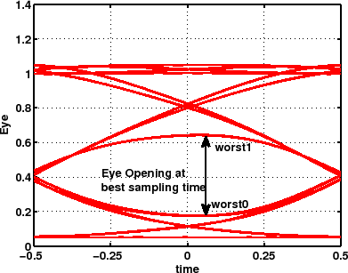

eval_eye
Evaluate the eye opening for a non-coherent transmission.
EO=EVAL_EYE(ICH,X,PAT)
[EO, TS]=EVAL_EYE(ICH,X,PAT)
[EO, TS, IS]=EVAL_EYE(ICH,X,PAT)
[EO, TS, IS, SN]=EVAL_EYE(ICH,X,PAT)
[EO, TS, IS, SN, DELAY]=EVAL_EYE(ICH,X,PAT)
EO=EVAL_EYE(ICH,X,PAT) evaluates the eye opening EO
of channel ICH of a non-coherent transmission. The eye opening
[mA] is defined as: max(worst1-worst0) being worst1 and worst0
the worst mark/space samples.
Figure 2.10:
Example of eye for OOK transmission.
|

|
[EO,TS] =EVAL_EYE(ICH,X,PAT) returns also the best sampling
time TS normalized to the bit time.
EO and TS are evaluated by parabolic interpolation
of the available data. PAT is the symbol pattern, after decoding
(see pat_decoder). PAT can be
a vector or a matrix, depending on the modulation format (see next).
X is a structure whose fields are:
- X.rec = receiver type. Valid arguments are: 'ook','psbt','nf-dpsk'
to use receiver_ook, 'dpsk'
to use receiver_dpsk, 'dqpsk'
to use receiver_dqpsk.
- X.oftype = optical filter type (see myfilter)
- X.obw = optical filter 3 dB bandwidth normalized to the bit
rate
- X.oord = optical filter order (if X.oftype is 'supergaussian')
- X.eftype = electrical filter type (see myfilter)
- X.ebw = electrical filter 3-dB bandwidth normalized to the
bit rate
- X.eord = electrical filter order (if X.eftype is
'supergaussian')
X can also have the optional parameters:
- X.ts = Fixed sampling time (-0.5 <= X.ts <= 0.5).
- X.plot = 'ploteye': plots the eye in the active figure; 'plotcur'
plots the received current.
- X.color = color string for the plot (see PLOT). E.g. 'b-'.
- X.dpost = post compensating fiber cumulated dispersion [ps/nm]
- X.slopez = post compensating fiber cumulated slope [ps/nm^2]
- X.lambda = wavelength [nm] at which the post compensating
fiber has a cumulated dispersion equal to X.dpost.
- X.comp = component on which evaluate eye and calculate BER
(dqpsk modulation only). Can be 'phase' or 'quadrature'
or 'both'. In the last case the function gets two measurements
over the in-phase and quadrature components, sampled with the same
clock time. X.comp='both' requires PAT to be a two-column
matrix with the phase/quadrature binary patterns on column 1,2, respectively.
- X.print = structure for print. E.g. X.print = {'nomefile','eye'}
or X.print ={'nomefile',
'current'}, prints to file nomefile
the eye or the current, respectively. nomefile will be place into
GSTATE.DIR within a directory ending with '.MOD'.
- X.delay = 'theory' means that the delay uses the theoretical
delay saved within GSTATE.DELAY (see create_field).
By default the delay is measured by a cross-correlation measurement
between the received current and an artificial pulse amplitude modulation
(PAM) signal with ideal non-return to zero bits with symbols equal
to PAT. The correlation method is useful in presence of polarization
mode dispersion (PMD). See corrdelay.
The receiver is composed of an ideal, purely linear, post compensating
fiber + optical filter + optical to electrical converter + electrical
lowpass filter. For example see receiver_ook
or receiver_dpsk.
[EO, TS, IS, SN, DELAY]=EVAL_EYE(ICH,X,PAT) also returns
in IS a column vector containing the sampled bits. SN
is a vector containing the FFT coefficients of the signal after the
optical filter (SN is used by ber_kl).
DELAY is the overall system delay in bits.
With X.comp='both' all variables on output are doubled
in size for accounting for the in-phase and quadrature component.
It is -0.5 <= TS <= 0.5, with usually TS ~=
0.
|
Note 1: This function works over a copy of the electric field.
All fields of the global variable GSTATE are left unchanged.
Note 2: All fields of X must be lowercase.
Note 3: Please, beware that EVAL_EYE needs the decoded
pattern, not the transmitted one. See the examples. |
pattern, myfilter,
best_eye, receiver_ook,
receiver_dpsk, receiver_dqpsk,
ber_kl, pat_decoder,
corrdelay
Optilux toolbox reference manual